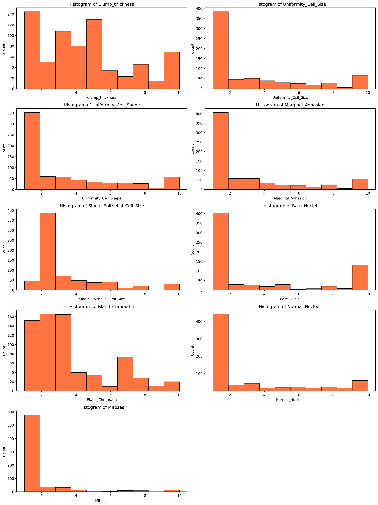

# importing necessary python packages
import numpy as np # linear algebra
import pandas as pd # data processing, CSV file I/O (e.g. pd.read_csv)
import matplotlib.pyplot as plt # for data visualization purposes
import seaborn as sns # for data visualization
import sklearn # for Machine Learning11 Machine Learning
Learning Objectives of the Chapter
At the End of the Chapter, Students should be Able to -
Learn about the Nature of Machine Learning (ML)
Recognize the Importance of Machine Learning in Accounting & Auditing
Understand Different Types of Machine Learning
Learn about Different Kinds of Machine Learning Algorithms
Build Some Machine Learning Models and Evaluate their Performance
11.1 Introduction
Machine Learning (ML), which is a subset of Artificial Intelligence (AI)1, has been woven into the fabric of our daily lives (Reddi 2025). Since waking up from the sleep until we go to the bed, we keep interacting with ML based products or services. For example, while commuting to the office, our GPS suggests the best route; at work, email filters spam (Reddi 2025). Therefore, it is dubbed AI is everywhere. While 18th and 19th centuries are characterized by Industrial Revolution, and 20th century is by Computer and Internet - the 21st century seems to be dominated by ML and AI.
It goes without saying that AI/ML has potential to significantly transform accounting and auditing profession in many ways. For example, repetitive tasks such as data entry, reconiliation, verification can be subordinated to AI, which allows accountants and auditors to get involved more with stratgeic decision making. Even in strategic decision making, AI facilitates effective and efficient decision making by identifying and processing vast amount of the unstructured data. Moreover, ML systems allow continuous montioring of finanical activites and real time insights of potential risks, thus enhancing the accuracy of financial reporting. Therefore, understanding how ML systems work is important for the future generation of accountants and auditors.
11.2 Importance of Machine Learning in Accounting
Accountants and auditors have already started leveraging the power of AI in their day to day business. For example, auditors are using AI/ML to review and extract information from contracts, thus reducing time and human errors (Schatsky, Muraskin, and Ragu 2015). The auditing process is being automated gradually, reducing the time spent on reviewing the audit documentations and allowing more time to spend on professional judgment (Schatsky, Muraskin, and Ragu 2015; Persico, Sidhu, et al. 2017). For example, audit procedure - confirmation - is handled by AI-enabled system, ultimately providing the auditors with the relevant documentation for professional judgment. AI-enabled drone using computer vision is being used in accounting profession to count inventory and communicate the data with the auditors in real time, thus allowing more data to be captured and allowing auditors to focus on risk management (Vien 2018). Academic research also supports that AI/ML is enhancing the performance of accountants and auditors (Fedyk et al. 2022; Estep, Griffith, and MacKenzie 2024).
Recently, accounting firms have turned their focus on Generative Artificial Intelligence (GenAI). For example, PricewaterhouseCoopers dedicated $1 billion investment in GenAI, partnering with Microsoft and OpenAI to automate aspects of its tax, audit and consulting services (Loten 2023). Other accounting firms started following the same feat (Deloitte 2024). Moreover, big four accounting firms are developing their own chatbot like ChatGPT. For example, EY rolled out EY.ai EYQ - a large language model - to aid EY employees in ideation, research, and creation; and to aid clients to capture the transformative power of AI to transform their businesses through confident and responsible adoption of AI (EY 2023). To sum up, all these developments highlight the importance of AI/ML in accounting. Therefore, future generations of accountants should prepare themselves to embrace these technologies, develop relevant skills, and stay updated with the latest advancements in AI and ML. This will enable them to leverage AI/ML tools effectively, enhance their professional capabilities, and contribute to the evolving landscape of the accounting profession.
11.3 Types of Machine Learning
Machine learning can be categorized into different types based on the the nature of learning process and the type of data it used. Usually, ML can be categorized into three types - supervised, unsupervised, and reinforcement learning. Figure 11.1 shows different types of machine learning.
11.3.1 Supervised Machine Learning
11.3.2 Unsupervised Machine Learning
11.3.3 Reinforcement Learning
11.4 Roadmap for Building ML Systems
In the previous sections, we discuss about machine learning and different types of ML. In this section, we will discuss typical workflow (also called roadmap) for using machine systems (Raschka, Liu, and Mirjalili 2022). Figure 11.2 shows the typical workflow when ML systems are developed.
11.5 Example of a Machine Learning System
Using a dataset, machine learning roadmap or workflow is illustrated below. A supervised machine learning for classification is used.
11.5.1 Preprocessing Data
Since data rarely come into the form ready to feed into an ML system, preprocessing is an important step before feeding the data into an ML system. Preprocessing invloves getting the data ready into shape so that data become ready to feed into an ML system. Based on the condition or circumstances of the data, we need to decide what kinds of preprocessing we will perform on the dataset. Usually, in preprocessing, we clean and transform the dataset. Some of the cleaning includes - fixing the name of the fixtures, removing missing rows, changing the types of the features and so on.
# importing Dataset
df = pd.read_csv("DATA/breast-cancer-wisconsin.txt", header=None)# meta data
df.shape
df.info()
df.head()<class 'pandas.core.frame.DataFrame'>
RangeIndex: 699 entries, 0 to 698
Data columns (total 11 columns):
# Column Non-Null Count Dtype
--- ------ -------------- -----
0 0 699 non-null int64
1 1 699 non-null int64
2 2 699 non-null int64
3 3 699 non-null int64
4 4 699 non-null int64
5 5 699 non-null int64
6 6 699 non-null object
7 7 699 non-null int64
8 8 699 non-null int64
9 9 699 non-null int64
10 10 699 non-null int64
dtypes: int64(10), object(1)
memory usage: 60.2+ KB| 0 | 1 | 2 | 3 | 4 | 5 | 6 | 7 | 8 | 9 | 10 | |
|---|---|---|---|---|---|---|---|---|---|---|---|
| 0 | 1000025 | 5 | 1 | 1 | 1 | 2 | 1 | 3 | 1 | 1 | 2 |
| 1 | 1002945 | 5 | 4 | 4 | 5 | 7 | 10 | 3 | 2 | 1 | 2 |
| 2 | 1015425 | 3 | 1 | 1 | 1 | 2 | 2 | 3 | 1 | 1 | 2 |
| 3 | 1016277 | 6 | 8 | 8 | 1 | 3 | 4 | 3 | 7 | 1 | 2 |
| 4 | 1017023 | 4 | 1 | 1 | 3 | 2 | 1 | 3 | 1 | 1 | 2 |
# assigning column names
col_names = ['Id', 'Clump_thickness', 'Uniformity_Cell_Size', 'Uniformity_Cell_Shape', 'Marginal_Adhesion','Single_Epithelial_Cell_Size', 'Bare_Nuclei', 'Bland_Chromatin', 'Normal_Nucleoli', 'Mitoses', 'Class']
df.columns = col_names
df.columns
df.info()
df.head()<class 'pandas.core.frame.DataFrame'>
RangeIndex: 699 entries, 0 to 698
Data columns (total 11 columns):
# Column Non-Null Count Dtype
--- ------ -------------- -----
0 Id 699 non-null int64
1 Clump_thickness 699 non-null int64
2 Uniformity_Cell_Size 699 non-null int64
3 Uniformity_Cell_Shape 699 non-null int64
4 Marginal_Adhesion 699 non-null int64
5 Single_Epithelial_Cell_Size 699 non-null int64
6 Bare_Nuclei 699 non-null object
7 Bland_Chromatin 699 non-null int64
8 Normal_Nucleoli 699 non-null int64
9 Mitoses 699 non-null int64
10 Class 699 non-null int64
dtypes: int64(10), object(1)
memory usage: 60.2+ KB| Id | Clump_thickness | Uniformity_Cell_Size | Uniformity_Cell_Shape | Marginal_Adhesion | Single_Epithelial_Cell_Size | Bare_Nuclei | Bland_Chromatin | Normal_Nucleoli | Mitoses | Class | |
|---|---|---|---|---|---|---|---|---|---|---|---|
| 0 | 1000025 | 5 | 1 | 1 | 1 | 2 | 1 | 3 | 1 | 1 | 2 |
| 1 | 1002945 | 5 | 4 | 4 | 5 | 7 | 10 | 3 | 2 | 1 | 2 |
| 2 | 1015425 | 3 | 1 | 1 | 1 | 2 | 2 | 3 | 1 | 1 | 2 |
| 3 | 1016277 | 6 | 8 | 8 | 1 | 3 | 4 | 3 | 7 | 1 | 2 |
| 4 | 1017023 | 4 | 1 | 1 | 3 | 2 | 1 | 3 | 1 | 1 | 2 |
# Dropping redundant columns
df.drop('Id', axis=1, inplace=True)
df.info()<class 'pandas.core.frame.DataFrame'>
RangeIndex: 699 entries, 0 to 698
Data columns (total 10 columns):
# Column Non-Null Count Dtype
--- ------ -------------- -----
0 Clump_thickness 699 non-null int64
1 Uniformity_Cell_Size 699 non-null int64
2 Uniformity_Cell_Shape 699 non-null int64
3 Marginal_Adhesion 699 non-null int64
4 Single_Epithelial_Cell_Size 699 non-null int64
5 Bare_Nuclei 699 non-null object
6 Bland_Chromatin 699 non-null int64
7 Normal_Nucleoli 699 non-null int64
8 Mitoses 699 non-null int64
9 Class 699 non-null int64
dtypes: int64(9), object(1)
memory usage: 54.7+ KB# changing the types of variables
df['Bare_Nuclei'] = pd.to_numeric(df['Bare_Nuclei'], errors='coerce')
df.dtypesClump_thickness int64
Uniformity_Cell_Size int64
Uniformity_Cell_Shape int64
Marginal_Adhesion int64
Single_Epithelial_Cell_Size int64
Bare_Nuclei float64
Bland_Chromatin int64
Normal_Nucleoli int64
Mitoses int64
Class int64
dtype: object# Checking missing observations
df.isnull().sum() # Checking missing values in variables
df.isna().sum() # Checking missing values in the dataframe Clump_thickness 0
Uniformity_Cell_Size 0
Uniformity_Cell_Shape 0
Marginal_Adhesion 0
Single_Epithelial_Cell_Size 0
Bare_Nuclei 16
Bland_Chromatin 0
Normal_Nucleoli 0
Mitoses 0
Class 0
dtype: int64# summary statistics
round(df.describe(),2).transpose()| count | mean | std | min | 25% | 50% | 75% | max | |
|---|---|---|---|---|---|---|---|---|
| Clump_thickness | 699.0 | 4.42 | 2.82 | 1.0 | 2.0 | 4.0 | 6.0 | 10.0 |
| Uniformity_Cell_Size | 699.0 | 3.13 | 3.05 | 1.0 | 1.0 | 1.0 | 5.0 | 10.0 |
| Uniformity_Cell_Shape | 699.0 | 3.21 | 2.97 | 1.0 | 1.0 | 1.0 | 5.0 | 10.0 |
| Marginal_Adhesion | 699.0 | 2.81 | 2.86 | 1.0 | 1.0 | 1.0 | 4.0 | 10.0 |
| Single_Epithelial_Cell_Size | 699.0 | 3.22 | 2.21 | 1.0 | 2.0 | 2.0 | 4.0 | 10.0 |
| Bare_Nuclei | 683.0 | 3.54 | 3.64 | 1.0 | 1.0 | 1.0 | 6.0 | 10.0 |
| Bland_Chromatin | 699.0 | 3.44 | 2.44 | 1.0 | 2.0 | 3.0 | 5.0 | 10.0 |
| Normal_Nucleoli | 699.0 | 2.87 | 3.05 | 1.0 | 1.0 | 1.0 | 4.0 | 10.0 |
| Mitoses | 699.0 | 1.59 | 1.72 | 1.0 | 1.0 | 1.0 | 1.0 | 10.0 |
| Class | 699.0 | 2.69 | 0.95 | 2.0 | 2.0 | 2.0 | 4.0 | 4.0 |
# visualization
# Set the figure size
plt.figure(figsize=(15, 20))
# Create subplots
for i, column in enumerate(df.drop(columns = ['Class']).columns, 1):
plt.subplot(5, 2, i)
sns.histplot(df[column], bins=10, color = "orangered")
plt.title(f'Histogram of {column}')
plt.tight_layout()
plt.show()
# Discovering pattern and relation
correlation = df.corr()
correlation['Class'].sort_values(ascending=False)Class 1.000000
Bare_Nuclei 0.822696
Uniformity_Cell_Shape 0.818934
Uniformity_Cell_Size 0.817904
Bland_Chromatin 0.756616
Clump_thickness 0.716001
Normal_Nucleoli 0.712244
Marginal_Adhesion 0.696800
Single_Epithelial_Cell_Size 0.682785
Mitoses 0.423170
Name: Class, dtype: float64 The correlation coefficient ranges from -1 to +1. When it is close to +1, this signifies that there is a strong positive correlation. So, we can see that there is a strong positive correlation between Class and Bare_Nuclei, Class and Uniformity_Cell_Shape, Class and Uniformity_Cell_Size. When it is close to -1, it means that there is a strong negative correlation. When it is close to 0, it means that there is no correlation. We can see that all the variables are positively correlated with Class variable. Some variables are strongly positive correlated while some variables are negatively correlated.
plt.figure(figsize=(10,8))
plt.title('Correlation of Attributes with Class variable')
a = sns.heatmap(correlation, square=True, annot=True, fmt='.2f', linecolor='white')
a.set_xticklabels(a.get_xticklabels(), rotation=90)
a.set_yticklabels(a.get_yticklabels(), rotation=30)
plt.show()11.5.2 Declaring Feature Vector and Target Vector
In machine learning, the terms feature vector and target vector are fundamental concepts. A feature vector is a collection of input variables (features) that are used to make predictions. Each feature represents a measurable property or characteristic of the data. The feature vector is typically represented as a row in a dataset, where each column corresponds to a different feature. On the otherhand, The target vector, also known as the response vector or label, is the output variable that the model aims to predict. It represents the ground truth or actual values that correspond to the feature vectors. In our dataset, the target vector is Class and all other variables (features) are feature vector.
# Feature Vector
X = df.drop(['Class'], axis = 1)
# Target Vector
y = df["Class"]11.5.3 Training and Testing Dataset
The training dataset is the portion of the data used to train the machine learning model. It contains input-output pairs where the input is the feature vector, and the output is the target vector. The model learns the relationship between the inputs and outputs during the training process. The testing dataset is the portion of the data used to evaluate the performance of the trained model. It contains input-output pairs that the model has not seen during training. The testing dataset helps assess how well the model generalizes to new, unseen data.
Splitting the dataset into training and testing sets is a very important step in building and evaluating machine learning models. We need to split the dataset into training and testing for the following reasons.
Model Evaluation: The testing dataset is used to evaluate the models performance on new, unseen data. This helps determine how well the model generalizes to real-world scenarios. Overfitting occurs when a model performs well on the training data but poorly on new data. By evaluating the model on a separate testing set, we can detect and mitigate overfitting. If we use the same dataset for developing and evaluating model, then model performance will be overstated.
Hyperparameter Tuning: To optimize the performance of machine learning models, we need to identify the best parameters2 for the model. Hyperparameter tuning is the process of identifying the best parameters for optimizing the performance of machine learning models. During the training process, hyperparameters (e.g., value of \(k\) in KNN algorithm) are tuned to improve the models performance. The testing set helps validate that these parameters are optimized for generalization, not just for the training data.
Bias-Variance Tradeoff: Splitting the data helps in managing the bias-variance tradeoff. A model with high bias may underfit the data, while a model with high variance may overfit. Evaluating on a testing set helps find the right balance.
# Split X and y into training and testing sets
from sklearn.model_selection import train_test_split
X_train, X_test, y_train, y_test = train_test_split(X, y, test_size = 0.2, random_state = 0)# check the shape of X_train and X_test
X_train.shape, X_test.shape((559, 9), (140, 9))11.5.4 Feature Engineering
Feature engineering is the process of creating new features or modifying existing ones to improve the performance of a machine learning model. It involves transforming raw data into meaningful features that better represent the underlying patterns and relationships in the data. Effective feature engineering can significantly enhance the accuracy and efficiency of machine learning models. Key Steps in Feature Engineering -
- Data Cleaning:
- Handling Missing Values: Filling in or removing missing data points.
- Removing Outliers: Identifying and eliminating data points that deviate significantly from the rest of the data.
- Feature Creation:
- Combining Features: Creating new features by combining existing ones (e.g., creating a total sales feature by summing individual sales columns).
- Extracting Features: Deriving new features from existing data (e.g., extracting the day of the week from a date column).
- Feature Transformation:
- Scaling: Normalizing or standardizing features to ensure they have similar scales (e.g., using Min-Max scaling or Z-score normalization).
- Encoding Categorical Variables: Converting categorical variables into numerical representations (e.g., one-hot encoding or label encoding).
- Feature Selection:
- Removing Redundant Features: Eliminating features that provide little or no additional information.
- Selecting Important Features: Identifying and retaining the most relevant features using techniques like correlation analysis, mutual information, or feature importance scores from models.
- Dimensionality Reduction:
- Principal Component Analysis (PCA): Reducing the number of features while preserving the most important information.
- t-Distributed Stochastic Neighbor Embedding (t-SNE): Visualizing high-dimensional data in lower dimensions.
# check missing values in numerical variables in X_train
X_train.isnull().sum()Clump_thickness 0
Uniformity_Cell_Size 0
Uniformity_Cell_Shape 0
Marginal_Adhesion 0
Single_Epithelial_Cell_Size 0
Bare_Nuclei 13
Bland_Chromatin 0
Normal_Nucleoli 0
Mitoses 0
dtype: int64# check missing values in numerical variables in X_test
X_test.isnull().sum()Clump_thickness 0
Uniformity_Cell_Size 0
Uniformity_Cell_Shape 0
Marginal_Adhesion 0
Single_Epithelial_Cell_Size 0
Bare_Nuclei 3
Bland_Chromatin 0
Normal_Nucleoli 0
Mitoses 0
dtype: int64# print percentage of missing values in the numerical variables in training set
for col in X_train.columns:
if X_train[col].isnull().mean()>0:
print(col, round(X_train[col].isnull().mean(),4))Bare_Nuclei 0.0233It is assumed that the data are missing completely at random (MCAR). There are two methods which can be used to impute missing values. One is mean or median imputation and other one is random sample imputation. When there are outliers in the dataset, we should use median imputation. So, I will use median imputation because median imputation is robust to outliers.
I will impute missing values with the appropriate statistical measures of the data, in this case median. Imputation should be done over the training set, and then propagated to the test set. It means that the statistical measures to be used to fill missing values both in train and test set, should be extracted from the train set only. This is to avoid overfitting.
# impute missing values in X_train and X_test with respective column median in X_train
for df in [X_train, X_test]:
for col in X_train.columns:
col_median=X_train[col].median()
df[col].fillna(col_median, inplace=True) # check again missing values in numerical variables in X_train
X_train.isnull().sum()Clump_thickness 0
Uniformity_Cell_Size 0
Uniformity_Cell_Shape 0
Marginal_Adhesion 0
Single_Epithelial_Cell_Size 0
Bare_Nuclei 0
Bland_Chromatin 0
Normal_Nucleoli 0
Mitoses 0
dtype: int64# check missing values in numerical variables in X_test
X_test.isnull().sum()Clump_thickness 0
Uniformity_Cell_Size 0
Uniformity_Cell_Shape 0
Marginal_Adhesion 0
Single_Epithelial_Cell_Size 0
Bare_Nuclei 0
Bland_Chromatin 0
Normal_Nucleoli 0
Mitoses 0
dtype: int64Now, we will perform feature selection. Feature selection involves identifying the features that have the greatest explanatory power to predict the target variables. Therere are many techniques that can be used for feature selection. When there are many variables, using feature selection is very much important. Otherwise, noises might be introduced in the model.
# feature selectiong using Chi-square test
from sklearn.feature_selection import SelectKBest, chi2, f_classif
chi_feature = SelectKBest(chi2, k = 4).fit(X_train, y_train)
print ('Score: ', chi_feature.scores_)
print ('Features: ', X_train.columns)Score: [ 493.52822606 1144.54028237 1046.47720631 844.84992698 404.07603727
1364.87717094 532.42045225 951.992508 180.65784477]
Features: Index(['Clump_thickness', 'Uniformity_Cell_Size', 'Uniformity_Cell_Shape',
'Marginal_Adhesion', 'Single_Epithelial_Cell_Size', 'Bare_Nuclei',
'Bland_Chromatin', 'Normal_Nucleoli', 'Mitoses'],
dtype='object')# feature selection using ANOVA
anova_feature = SelectKBest (f_classif, k = 4).fit(X_train, y_train)
print ('Scores: ', anova_feature.scores_)
print ('Features: ', X_train.columns)Scores: [ 545.20592252 1142.16232995 1093.33969603 582.15032766 518.143572
1022.11887635 716.06901174 593.48561929 124.1776932 ]
Features: Index(['Clump_thickness', 'Uniformity_Cell_Size', 'Uniformity_Cell_Shape',
'Marginal_Adhesion', 'Single_Epithelial_Cell_Size', 'Bare_Nuclei',
'Bland_Chromatin', 'Normal_Nucleoli', 'Mitoses'],
dtype='object') We can rank the features based on their scores. Higher scores indicate more relevant feature. Therefore, chi-square test above indicate that the four relevant features are - Clump_thickness, Uniformity_Cell_Size, Uniformity_Cell_Shape, and Marginal_Adhesion. Using ANOVA suggests the same results.
Now, we will perform feature scaling. Normalizing or standardizing features to ensure they have similar scales (e.g., using Min-Max scaling or Z-score normalization). Feature scaling is important because some algorimthms (such as KNN, Support Vector Machines) in ML are sensitive to the scale of features. Scaling ensures that all features contribute equally to the models predictions. Moreover, if features are not scaled, features with larger values tend to dominate learning process in ML, thus leading to bias in results. Therefore, scaling ensures that each feature contributes equally to the model. Moreover, distance-based alogrithms perform better when features are scaled.
# Feature Scaling
cols = X_train.columns
from sklearn.preprocessing import StandardScaler
scaler = StandardScaler()
X_train = scaler.fit_transform(X_train)
X_test = scaler.transform(X_test)
X_train = pd.DataFrame(X_train, columns=[cols])
X_test = pd.DataFrame(X_test, columns=[cols])
X_train.head()| Clump_thickness | Uniformity_Cell_Size | Uniformity_Cell_Shape | Marginal_Adhesion | Single_Epithelial_Cell_Size | Bare_Nuclei | Bland_Chromatin | Normal_Nucleoli | Mitoses | |
|---|---|---|---|---|---|---|---|---|---|
| 0 | 2.028383 | 0.299506 | 0.289573 | 1.119077 | -0.546543 | 1.858357 | -0.577774 | 0.041241 | -0.324258 |
| 1 | 1.669451 | 2.257680 | 2.304569 | -0.622471 | 3.106879 | 1.297589 | -0.159953 | 0.041241 | -0.324258 |
| 2 | -1.202005 | -0.679581 | -0.717925 | 0.074148 | -1.003220 | -0.104329 | -0.995595 | -0.608165 | -0.324258 |
| 3 | -0.125209 | -0.026856 | -0.046260 | -0.622471 | -0.546543 | -0.665096 | -0.159953 | 0.041241 | -0.324258 |
| 4 | 0.233723 | -0.353219 | -0.382092 | -0.274161 | -0.546543 | -0.665096 | -0.577774 | -0.283462 | -0.324258 |
11.6 Machine Learning Algorithms
Now, the data is ready to feed to a Machine Learning algorithm. An algorithm is a step-by-step procedure or set of rules designed to perform a specific task or solve a particular problem. It is a sequence of instructions that takes an input, processes it, and produces an output. Machine learning algorithms are the backbone of machine learning systems. They are used to build models that can learn from data and make predictions or decisions. Different algorthims learn different ways from the data. For different ML, different kinds of algorithms are used. For example, for classification supervised machine learning, we can use KNN algorithm, logistic regression, decision trees, and support vector machines.
11.6.1 K Nearnest Neighbor (KNN) Algorithm
KNN is a simple, yet powerful, machine learning supervised algorithm. KNN is an instance based ML algorithm because it uses similarity between data points to make a prediction. To measure the similarity between data points, KNN relies on distance metrics such as Euclidean distance, or Manhattan distance, or Minkowski distance. KNN is called lazy learner because all of its computation is done in prediction phase. The K in KNN represents the number of nearest neighbors to consider when making the prediction. For example, when K = 2, the number of neareast number that will be used is 2.
Assume you are trying to build a model that will classify reptiles into one of three classes (Rhys 2020). The classes are - Adder, Grass Snake, and Slow worm. We have two features of the reptiles - length of it and how aggressive (aggressiveness) the reptile is - which we will use to classify the reptiles. Further assume that a reptile expert helps you manually classify the observations so far, but you decide to build a kNN classifier to help you quickly classify future specimens you come across. Figure 11.3 plots the data before classification. Each of the reptile is plotted against body length and aggressiveness and we have three new reptiles that need to be classified.
To predict the classifiction of the new reptiles, KNN will use distance based metrics as mentioned above and calculate the distance between each new unlabelled cases and all the labeled cases. Then, for each new unlabelled case, the algorithm ranks the neighbors from the nearest (most similar) to the furthest (the least similar) (Rhys 2020). Figure 11.4 shows the ranking of the neighbors. The algorithm identifies K-labeled cases (neighbors) nearest to each unlabeled cas. We actually determine the value of K. Each of the K-nearest neighbor cases votes to which class the unlabeled case belongs. Figure 11.5 shows the membership of new cases based on the value of K.
11.6.2 Building First KNN Model
# import KNeighbors ClaSSifier from sklearn
from sklearn.neighbors import KNeighborsClassifier
# instantiate the model
knn = KNeighborsClassifier(n_neighbors=3)
# fit the model to the training set
knn.fit(X_train, y_train)KNeighborsClassifier(n_neighbors=3)In a Jupyter environment, please rerun this cell to show the HTML representation or trust the notebook.
On GitHub, the HTML representation is unable to render, please try loading this page with nbviewer.org.
KNeighborsClassifier(n_neighbors=3)
# prediction using test data
y_pred = knn.predict(X_test)
y_predarray([2, 2, 4, 2, 4, 2, 4, 2, 4, 2, 2, 2, 4, 4, 4, 2, 2, 4, 4, 2, 4, 4,
2, 2, 2, 4, 2, 2, 4, 4, 2, 2, 2, 2, 2, 2, 2, 4, 2, 2, 2, 2, 2, 2,
4, 4, 2, 4, 2, 4, 4, 2, 2, 4, 2, 2, 2, 2, 2, 2, 4, 2, 2, 4, 4, 4,
4, 2, 2, 4, 2, 2, 4, 4, 2, 2, 2, 2, 4, 2, 2, 2, 4, 2, 2, 2, 4, 2,
4, 4, 2, 2, 2, 4, 2, 2, 2, 4, 2, 4, 4, 2, 2, 2, 4, 2, 2, 2, 2, 2,
4, 4, 4, 2, 2, 2, 2, 2, 4, 4, 4, 4, 2, 4, 2, 2, 4, 4, 4, 4, 4, 2,
2, 4, 4, 2, 2, 4, 2, 2], dtype=int64) predict_proba () method gives the probabilities for the target variable(2 and 4) in this case, in array form. 2 is for probability of benign cancer and 4 is for probability of malignant cancer.
# Prediction probability
knn.predict_proba(X_test)[0:11]array([[1. , 0. ],
[1. , 0. ],
[0.33333333, 0.66666667],
[1. , 0. ],
[0. , 1. ],
[1. , 0. ],
[0. , 1. ],
[1. , 0. ],
[0. , 1. ],
[0.66666667, 0.33333333],
[1. , 0. ]])# probability of getting output as 2 - benign cancer
knn.predict_proba(X_test)[:,0]array([1. , 1. , 0.33333333, 1. , 0. ,
1. , 0. , 1. , 0. , 0.66666667,
1. , 1. , 0. , 0.33333333, 0. ,
1. , 1. , 0. , 0. , 1. ,
0. , 0. , 1. , 1. , 1. ,
0. , 1. , 1. , 0. , 0. ,
1. , 1. , 1. , 1. , 1. ,
0.66666667, 1. , 0. , 1. , 1. ,
1. , 1. , 1. , 1. , 0. ,
0. , 1. , 0. , 1. , 0. ,
0. , 1. , 1. , 0. , 1. ,
1. , 1. , 1. , 0.66666667, 1. ,
0. , 1. , 1. , 0. , 0. ,
0.33333333, 0. , 1. , 1. , 0. ,
1. , 1. , 0. , 0. , 1. ,
1. , 1. , 1. , 0. , 1. ,
1. , 1. , 0. , 1. , 1. ,
1. , 0. , 1. , 0. , 0. ,
1. , 1. , 0.66666667, 0. , 1. ,
1. , 1. , 0. , 1. , 0. ,
0. , 1. , 1. , 1. , 0. ,
1. , 1. , 1. , 1. , 1. ,
0. , 0.33333333, 0. , 1. , 1. ,
1. , 1. , 1. , 0. , 0. ,
0. , 0.33333333, 1. , 0. , 1. ,
1. , 0.33333333, 0.33333333, 0. , 0. ,
0. , 1. , 1. , 0.33333333, 0. ,
1. , 1. , 0. , 1. , 1. ])# probability of getting output as 4 - malignant cancer
knn.predict_proba(X_test)[:,1]array([0. , 0. , 0.66666667, 0. , 1. ,
0. , 1. , 0. , 1. , 0.33333333,
0. , 0. , 1. , 0.66666667, 1. ,
0. , 0. , 1. , 1. , 0. ,
1. , 1. , 0. , 0. , 0. ,
1. , 0. , 0. , 1. , 1. ,
0. , 0. , 0. , 0. , 0. ,
0.33333333, 0. , 1. , 0. , 0. ,
0. , 0. , 0. , 0. , 1. ,
1. , 0. , 1. , 0. , 1. ,
1. , 0. , 0. , 1. , 0. ,
0. , 0. , 0. , 0.33333333, 0. ,
1. , 0. , 0. , 1. , 1. ,
0.66666667, 1. , 0. , 0. , 1. ,
0. , 0. , 1. , 1. , 0. ,
0. , 0. , 0. , 1. , 0. ,
0. , 0. , 1. , 0. , 0. ,
0. , 1. , 0. , 1. , 1. ,
0. , 0. , 0.33333333, 1. , 0. ,
0. , 0. , 1. , 0. , 1. ,
1. , 0. , 0. , 0. , 1. ,
0. , 0. , 0. , 0. , 0. ,
1. , 0.66666667, 1. , 0. , 0. ,
0. , 0. , 0. , 1. , 1. ,
1. , 0.66666667, 0. , 1. , 0. ,
0. , 0.66666667, 0.66666667, 1. , 1. ,
1. , 0. , 0. , 0.66666667, 1. ,
0. , 0. , 1. , 0. , 0. ])11.6.3 Model Evaluation (Accuracy Score)
from sklearn.metrics import accuracy_score
print('Model accuracy score: {0:0.4f}'. format(accuracy_score(y_test, y_pred)))Model accuracy score: 0.9714So, the ML model predicts the outcome variable with 97.14% accuracy.
11.6.4 Overfitting and Underfitting
Overfitting and underfitting are two important sources of error in machine learning model building. In underfitting, the model is too simple or there are few predictors, thus failing to adequately describe the relationships/patterns in data. In underfitting, the model performs poorly on both training and testing data and is biased. On the other hand, in overfitting, the model is too complex or there are many predictors on the model. Thus, in overfitting, we are modeling not only the patterns in the data, but also the noise present in the dataset. In underfitting, the model performs very well on the trained data set, but performs poor on the testing data set. The problem with underfitting and obverfitting is that they reduce the generalizability of the model. Therefore, during model building process, we need to trade off between overfitting and underfitting. Figure 11.6 shows the tradeoff between overfitting and underfitting. Splitting the dataset into training and testing is one of the ways to deal with overfitting and underfitting. Splitting the data is calso called cross validation (CV), which is discussed further in Section 11.6.12.
y_pred_train = knn.predict(X_train)
# print the scores on training and test set
print('Training set score: {:.4f}'.format(knn.score(X_train, y_train)))
print('Test set score: {:.4f}'.format(knn.score(X_test, y_test)))Training set score: 0.9821
Test set score: 0.9714The training-set accuracy score is 0.9821 while the test-set accuracy to be 0.9714. These two values are quite comparable. So, there is no question of overfitting.
11.6.5 Comparing Model Accuracy with Null Accuracy
Null accuracy is a baseline measure used to evaluate the performance of a machine learning classification model. It represents the accuracy that could be achieved by always predicting the most frequent class in the dataset. Null accuracy is particularly useful for understanding how well a model performs compared to a simple, naive approach. If the models accuracy is lower than or equal to the null accuracy, it indicates that the model is not performing better than a naive approach of always predicting the most frequent class. In such cases, we may need to improve our model by feature engineering, or hyperparameter tuning, or using different algorithms. We can see that the occurences of most frequent class is 85. So, we can calculate null accuracy by dividing 85 by total number of occurences. We can see that our model accuracy score is 0.9714 but null accuracy score is 0.6071. So, we can conclude that our K Nearest Neighbors model is doing a very good job in predicting the class labels.
# check class distribution in test set
y_test.value_counts()Class
2 85
4 55
Name: count, dtype: int64# check null accuracy score
null_accuracy = (85/(85+55))
print('Null accuracy score: {0:0.4f}'. format(null_accuracy))Null accuracy score: 0.607111.6.6 Rebuild KNN Classification Model Using Different Values of K
# instantiate the model with k=5
knn_5 = KNeighborsClassifier(n_neighbors=5)
# fit the model to the training set
knn_5.fit(X_train, y_train)
# predict on the test-set
y_pred_5 = knn_5.predict(X_test)
print('Model accuracy score with k=5 : {0:0.4f}'. format(accuracy_score(y_test, y_pred_5)))Model accuracy score with k=5 : 0.971411.6.6.1 Rebuild KNN Classification Model Using K=6
# instantiate the model with k=6
knn_6 = KNeighborsClassifier(n_neighbors=6)
# fit the model to the training set
knn_6.fit(X_train, y_train)
# predict on the test-set
y_pred_6 = knn_6.predict(X_test)
print('Model accuracy score with k=6 : {0:0.4f}'. format(accuracy_score(y_test, y_pred_6)))Model accuracy score with k=6 : 0.978611.6.6.2 Rebuild KNN Classification Model Using K=7
# instantiate the model with k=7
knn_7 = KNeighborsClassifier(n_neighbors=7)
# fit the model to the training set
knn_7.fit(X_train, y_train)
# predict on the test-set
y_pred_7 = knn_7.predict(X_test)
print('Model accuracy score with k=7 : {0:0.4f}'. format(accuracy_score(y_test, y_pred_7)))Model accuracy score with k=7 : 0.978611.6.6.3 Rebuild KNN Classification Model Using K=8
# instantiate the model with k=8
knn_8 = KNeighborsClassifier(n_neighbors=8)
# fit the model to the training set
knn_8.fit(X_train, y_train)
# predict on the test-set
y_pred_8 = knn_8.predict(X_test)
print('Model accuracy score with k=8 : {0:0.4f}'. format(accuracy_score(y_test, y_pred_8)))Model accuracy score with k=8 : 0.978611.6.6.4 Rebuild KNN Classification Model Using K=9
# instantiate the model with k=9
knn_9 = KNeighborsClassifier(n_neighbors=9)
# fit the model to the training set
knn_9.fit(X_train, y_train)
# predict on the test-set
y_pred_9 = knn_9.predict(X_test)
print('Model accuracy score with k=9 : {0:0.4f}'. format(accuracy_score(y_test, y_pred_9)))Model accuracy score with k=9 : 0.9714Our original model accuracy score with k=3 is 0.9714. Now, we can see that we get same accuracy score of 0.9714 with k=5. But, if we increase the value of k further, this would result in enhanced accuracy. With k=6,7,8 we get accuracy score of 0.9786. So, it results in performance improvement. If we increase k to 9, then accuracy decreases again to 0.9714. Now, based on the above analysis we can conclude that our classification model accuracy is very good. Our model is doing a very good job in terms of predicting the class labels. But, it does not give the underlying distribution of values. Also, it does not tell anything about the type of errors our classifer is making.
11.6.7 Automating the Calculation of Value K
from sklearn import metrics
mean_acc = np.zeros(20)
for i in range(1,21):
#Train Model and Predict
knn = KNeighborsClassifier(n_neighbors = i).fit(X_train,y_train)
yhat= knn.predict(X_test)
mean_acc[i-1] = metrics.accuracy_score(y_test, yhat)
mean_accarray([0.95714286, 0.95 , 0.97142857, 0.96428571, 0.97142857,
0.97857143, 0.97857143, 0.97857143, 0.97142857, 0.97857143,
0.97857143, 0.97857143, 0.97142857, 0.97857143, 0.97857143,
0.97857143, 0.97857143, 0.97857143, 0.97857143, 0.97142857])loc = np.arange(1,21,step=1.0)
plt.figure(figsize = (10, 6))
# Create a line plot
sns.lineplot(x=range(1, 21), y=mean_acc, marker='o', color= "orangered")
plt.xticks(loc)
plt.xlabel('Number of Neighbors ')
plt.ylabel('Accuracy')
plt.title('Accuracy vs. Number of Neighbors')
plt.show()11.6.8 Hyperparameter Tuning
A hyperparameter is a parameter of the model that is set before the start of learning process. Different machine learning models have different hyperparameters. You can find out more about the different hyperparameters of k-NN in scikit-learn. For example, weights argument has two options - uniform or distance; p argument selects the either manhattn distance or euclidean distance.
Grid search and random search are two popular methods for hyperparameter tuning in machine learning. Both methods aim to find the best combination of hyperparameters that optimize the performance of a model. Grid search is an exhaustive search method that evaluates all possible combinations of hyperparameters from a predefined grid. It systematically explores the hyperparameter space by creating a grid of hyperparameter values and evaluating the model for each combination. One advantage of grid search is that it evaluates all possible combinations, ensuring that the best hyperparameters are found within the predefined grid. On the other hand, random search randomly samples hyperparameter combinations from a predefined distribution. It evaluates a fixed number of random combinations, rather than exhaustively searching the entire grid. One of the disadvantages of grid search is that it may miss the optimal combination of hyperparameters, as it does not evaluate all possible combinations.
We will use the Grid Search technique for hyperparameter optimization. An exhaustive grid search takes in as many hyperparameters as you would like, and tries every single possible combination of the hyperparameters as well as as many cross-validations as you would like it to perform. An exhaustive grid search is a good way to determine the best hyperparameter values to use, but it can quickly become time consuming with every additional parameter value and cross-validation that you add. Specifically, we will use three hyperparamters- n-neighbors, weights and metric.
n_neighbors: Decide the best k based on the values we have computed earlier.
weights: Check whether adding weights to the data points is beneficial to the model or not. uniform assigns no weight, while distance weighs points by the inverse of their distances meaning nearer points will have more weight than the farther points.
metric: The distance metric to be used will calculating the similarity.
from sklearn.model_selection import GridSearchCV Since we have provided the class validation score as 3( cv= 3), Grid Search will evaluate the model 10 x 2 x 3 x 3 = 180 times with different hyperparameters.
grid_params = { 'n_neighbors' : [3,4,5,6,7,8,9,10,11,12],
'weights' : ['uniform','distance'],
'metric' : ['minkowski','euclidean','manhattan']}
gs = GridSearchCV(KNeighborsClassifier(), grid_params, verbose = 1, cv=3, n_jobs = -1)# fit the model on our train set
g_res = gs.fit(X_train, y_train)Fitting 3 folds for each of 60 candidates, totalling 180 fits# find the best score
g_res.best_score_0.9696394686907022# get the hyperparameters with the best score
g_res.best_params_{'metric': 'manhattan', 'n_neighbors': 5, 'weights': 'distance'}# use the best hyperparameters
knn = KNeighborsClassifier(n_neighbors = 5, weights = 'distance', \
algorithm = 'brute',metric = 'manhattan')
knn.fit(X_train, y_train)KNeighborsClassifier(algorithm='brute', metric='manhattan', weights='distance')In a Jupyter environment, please rerun this cell to show the HTML representation or trust the notebook.
On GitHub, the HTML representation is unable to render, please try loading this page with nbviewer.org.
KNeighborsClassifier(algorithm='brute', metric='manhattan', weights='distance')
# get a prediction
y_hat = knn.predict(X_train)
y_knn = knn.predict(X_test)from sklearn import metricsprint('Training set accuracy: ', metrics.accuracy_score(y_train, y_hat))
print('Test set accuracy: ', metrics.accuracy_score(y_test, y_knn))Training set accuracy: 1.0
Test set accuracy: 0.978571428571428511.6.9 Confusion Matrix
A confusion matrix is a tool for summarizing the performance of a classification algorithm. A confusion matrix will give us a clear picture of classification model performance and the types of errors produced by the model. It gives us a summary of correct and incorrect predictions broken down by each category. The summary is represented in a tabular form. Four types of outcomes are possible while evaluating a classification model performance. These four outcomes are described below:
True Positives (TP) True Positives occur when we predict an observation belongs to a certain class and the observation actually belongs to that class.
True Negatives (TN) True Negatives occur when we predict an observation does not belong to a certain class and the observation actually does not belong to that class.
False Positives (FP) False Positives occur when we predict an observation belongs to a certain class but the observation actually does not belong to that class. This type of error is called Type I error.
False Negatives (FN) False Negatives occur when we predict an observation does not belong to a certain class but the observation actually belongs to that class. This is a very serious error and it is called Type II error.
These four outcomes are summarized in a confusion matrix given below.
# Print the Confusion Matrix with k =3 and slice it into four pieces
from sklearn.metrics import confusion_matrix
cm = confusion_matrix(y_test, y_pred)
print('Confusion matrix\n\n', cm)
print('\nTrue Positives(TP) = ', cm[0,0])
print('\nTrue Negatives(TN) = ', cm[1,1])
print('\nFalse Positives(FP) = ', cm[0,1])
print('\nFalse Negatives(FN) = ', cm[1,0])Confusion matrix
[[83 2]
[ 2 53]]
True Positives(TP) = 83
True Negatives(TN) = 53
False Positives(FP) = 2
False Negatives(FN) = 2The confusion matrix shows 83 + 53 = 136 correct predictions & 2 + 2 = 4 incorrect predictions. In this case, we have - True Positives (Actual Positive:1 and Predict Positive:1) - 83 True Negatives (Actual Negative:0 and Predict Negative:0) - 53 False Positives (Actual Negative:0 but Predict Positive:1) - 2 (Type I error) False Negatives (Actual Positive:1 but Predict Negative:0) - 2 (Type II error)
# Print the Confusion Matrix with k =7 and slice it into four pieces
cm_7 = confusion_matrix(y_test, y_pred_7)
print('Confusion matrix\n\n', cm_7)
print('\nTrue Positives(TP) = ', cm_7[0,0])
print('\nTrue Negatives(TN) = ', cm_7[1,1])
print('\nFalse Positives(FP) = ', cm_7[0,1])
print('\nFalse Negatives(FN) = ', cm_7[1,0])Confusion matrix
[[83 2]
[ 1 54]]
True Positives(TP) = 83
True Negatives(TN) = 54
False Positives(FP) = 2
False Negatives(FN) = 1# visualize confusion matrix with seaborn heatmap
plt.figure(figsize=(6,4))
cm_matrix = pd.DataFrame(data=cm_7, columns=['Actual Positive:1', 'Actual Negative:0'],
index=['Predict Positive:1', 'Predict Negative:0'])
sns.heatmap(cm_matrix, annot=True, fmt='d', cmap='OrRd')
11.6.10 Classification Matrices
11.6.10.1 Classification Report
Classification report is another way to evaluate the classification model performance. It displays the precision, recall, f1 and support scores for the model. I have described these terms in later. We can print a classification report as follows
from sklearn.metrics import classification_report
print(classification_report(y_test, y_pred_7)) precision recall f1-score support
2 0.99 0.98 0.98 85
4 0.96 0.98 0.97 55
accuracy 0.98 140
macro avg 0.98 0.98 0.98 140
weighted avg 0.98 0.98 0.98 140
11.6.10.2 Classification Accuracy
TP = cm_7[0,0]
TN = cm_7[1,1]
FP = cm_7[0,1]
FN = cm_7[1,0]11.6.10.3 Classification Error
# print classification error
classification_error = (FP + FN) / float(TP + TN + FP + FN)
print('Classification error : {0:0.4f}'.format(classification_error))Classification error : 0.021411.6.10.4 Precision
Precision can be defined as the percentage of correctly predicted positive outcomes out of all the predicted positive outcomes. It can be given as the ratio of true positives (TP) to the sum of true and false positives (TP + FP). Precision is a metric that tells us about the quality of positive predictions. So, Precision identifies the proportion of correctly predicted positive outcome. It is more concerned with the positive class than the negative class. Precision is a useful metric in cases where False Positive is a higher concern than False Negatives. Precision is important in music or video recommendation systems, e-commerce websites, etc. Wrong results could lead to customer churn and be harmful to the business. Mathematically, precision can be defined as the ratio of TP to (TP + FP).
# print precision score
precision = TP / float(TP + FP)
print('Precision : {0:0.4f}'.format(precision))Precision : 0.976511.6.10.5 Recall
Recall can be defined as the percentage of correctly predicted positive outcomes out of all the actual positive outcomes. It can be given as the ratio of true positives (TP) to the sum of true positives and false negatives (TP + FN). Recall tells us about how well the model identifies true positives. Recall is also called Sensitivity. Recall identifies the proportion of correctly predicted actual positives. Mathematically, recall can be given as the ratio of TP to (TP + FN). Recall is a useful metric in cases where False Negative triumphs over False Positive. Recall is important in medical cases where it doesnt matter whether we raise a false alarm, but the actual positive cases should not go undetected!
recall = TP / float(TP + FN)
print('Recall or Sensitivity : {0:0.4f}'.format(recall))Recall or Sensitivity : 0.988111.6.10.6 Precision vs Recall
Data scientists optimize their model to have higher precision or recall depending on the circumstances. A model with higher recall than precision often makes more positive predictions. A model like this comes with higher false positives and low false negatives. In scenarios like disease prediction, models should always be optimized for recall. False positives are better than false negatives in the healthcare industry.
On the other hand, a model with higher precision will have fewer false positives and more false negatives. If you were to build a bot detection machine learning model for an online store, you may want to optimize for higher precision, since banning legitimate users from the website will lead to a decline in sales.
11.6.10.7 f1-Score
In practice, when we try to increase the precision of our model, the recall goes down, and vice-versa. The F1-score captures both the trends in a single value:
$f1-score = 2/((1/Recall) + (1/Precision))$f1-score is the weighted harmonic mean of precision and recall, and so it gives a combined idea about these two metrics. It is maximum when Precision is equal to Recall. The best possible f1-score would be 1.0 and the worst would be 0.0. f1-score is the harmonic mean of precision and recall. So, f1-score is always lower than accuracy measures as they embed precision and recall into their computation. The weighted average of f1-score should be used to compare classifier models, not global accuracy.
11.6.10.8 Support
Support is the actual number of occurrences of the class in our dataset.
11.6.10.9 True Positive Rate
True Positive Rate is synonymous with Recall.
true_positive_rate = TP / float(TP + FN)
print('True Positive Rate : {0:0.4f}'.format(true_positive_rate))True Positive Rate : 0.988111.6.10.10 False Positive Rate
false_positive_rate = FP / float(FP + TN)
print('False Positive Rate : {0:0.4f}'.format(false_positive_rate))False Positive Rate : 0.035711.6.10.11 Specificity (True Negative Rate)
specificity = TN / (TN + FP)
print('Specificity : {0:0.4f}'.format(specificity))Specificity : 0.964311.6.10.12 Adjusting the Classification Threshold Level
# print the first 10 predicted probabilities of two classes- 2 and 4
y_pred_prob = knn.predict_proba(X_test)[0:10]
y_pred_probarray([[1. , 0. ],
[1. , 0. ],
[0.21219604, 0.78780396],
[1. , 0. ],
[0. , 1. ],
[1. , 0. ],
[0. , 1. ],
[1. , 0. ],
[0. , 1. ],
[0.40998626, 0.59001374]])In each row, the numbers sum to 1. There are 2 columns which correspond to 2 classes - 2 and 4.
Class 2 - predicted probability that there is benign cancer.
Class 4 - predicted probability that there is malignant cancer.
Importance of predicted probabilities
We can rank the observations by probability of benign or malignant cancer.
predict_probaprocessPredicts the probabilities
Choose the class with the highest probability
Classification threshold level
There is a classification threshold level of 0.5.
Class 4 - probability of malignant cancer is predicted if probability > 0.5.
Class 2 - probability of benign cancer is predicted if probability < 0.5.
y_pred_prob_df = pd.DataFrame(data=y_pred_prob, \
columns=['Prob of - benign cancer (2)', 'Prob of - malignant cancer (4)'])
y_pred_prob_df| Prob of - benign cancer (2) | Prob of - malignant cancer (4) | |
|---|---|---|
| 0 | 1.000000 | 0.000000 |
| 1 | 1.000000 | 0.000000 |
| 2 | 0.212196 | 0.787804 |
| 3 | 1.000000 | 0.000000 |
| 4 | 0.000000 | 1.000000 |
| 5 | 1.000000 | 0.000000 |
| 6 | 0.000000 | 1.000000 |
| 7 | 1.000000 | 0.000000 |
| 8 | 0.000000 | 1.000000 |
| 9 | 0.409986 | 0.590014 |
# print the first 10 predicted probabilities for class 4 - Probability of malignant cancer
knn.predict_proba(X_test)[0:10, 1]array([0. , 0. , 0.78780396, 0. , 1. ,
0. , 1. , 0. , 1. , 0.59001374])# store the predicted probabilities for class 4 - Probability of malignant cancer
y_pred_1 = knn.predict_proba(X_test)[:, 1]# plot histogram of predicted probabilities
# adjust figure size
plt.figure(figsize=(6,4))
# adjust the font size
plt.rcParams['font.size'] = 12
# plot histogram with 10 bins
#plt.hist(y_pred_1, bins = 10)
sns.histplot(y_pred_1, bins=10, kde=False, color='orangered')
# set the title of predicted probabilities
plt.title('Histogram of predicted probabilities of malignant cancer')
# set the x-axis limit
plt.xlim(0,1)
# set the title
plt.xlabel('Predicted probabilities of malignant cancer')
plt.ylabel('Frequency')Text(0, 0.5, 'Frequency')
11.6.11 ROC (Receiver Operating Characteristics) - AUC (Area Under ROC Curve) Curve
11.6.11.1 ROC Curve
Another tool to measure the classification model performance visually is ROC Curve. ROC Curve stands for Receiver Operating Characteristic Curve. An ROC Curve is a plot which shows the performance of a classification model at various classification threshold levels.
The ROC Curve plots the True Positive Rate (TPR) against the False Positive Rate (FPR) at various threshold levels. True Positive Rate (TPR) is also called Recall. It is defined as the ratio of TP to (TP + FN). False Positive Rate (FPR) is defined as the ratio of FP to (FP + TN).
In the ROC Curve, we will focus on the TPR (True Positive Rate) and FPR (False Positive Rate) of a single point. This will give us the general performance of the ROC curve which consists of the TPR and FPR at various threshold levels. So, an ROC Curve plots TPR vs FPR at different classification threshold levels. If we lower the threshold levels, it may result in more items being classified as positive. It will increase both True Positives (TP) and False Positives (FP).
# plot ROC Curve
from sklearn.metrics import roc_curve
fpr, tpr, thresholds = roc_curve(y_test, y_pred_1, pos_label=4)
plt.figure(figsize=(6,4))
# plt.plot(fpr, tpr, linewidth=2)
# plt.plot([0,1], [0,1], 'k--' )
sns.lineplot(x=fpr, y=tpr, linewidth=2, color='orangered')
plt.rcParams['font.size'] = 12
plt.title('ROC curve for Breast Cancer kNN classifier')
plt.xlabel('False Positive Rate (1 - Specificity)')
plt.ylabel('True Positive Rate (Sensitivity)')
plt.show()ROC curve help us to choose a threshold level that balances sensitivity and specificity for a particular context.
11.6.11.2 ROC AUC
ROC AUC stands for Receiver Operating Characteristic - Area Under Curve. It is a technique to compare classifier performance. In this technique, we measure the area under the curve (AUC). A perfect classifier will have a ROC AUC equal to 1, whereas a purely random classifier will have a ROC AUC equal to 0.5. So, ROC AUC is the percentage of the ROC plot that is underneath the curve.
# compute ROC AUC
from sklearn.metrics import roc_auc_score
ROC_AUC = roc_auc_score(y_test, y_pred_1)
print('ROC AUC : {:.4f}'.format(ROC_AUC))ROC AUC : 0.9827Interpretation:
* ROC AUC is a single number summary of classifier performance. The higher the value, the better the classifier.
* ROC AUC of our model approaches towards 1. So, we can conclude that our classifier does a good job in predicting whether it is benign or malignant cancer.from sklearn.model_selection import cross_val_score
Cross_validated_ROC_AUC = \
cross_val_score(knn_7, X_train, y_train, cv=5,scoring='roc_auc').mean()
print('Cross validated ROC AUC : {:.4f}'.format(Cross_validated_ROC_AUC))Cross validated ROC AUC : 0.9910Interpretation:
Our Cross Validated ROC AUC is very close to 1. So, we can conclude that, the KNN classifier is indeed a very good model.
11.6.12 Cross Validation
Cross-validation involves splitting the dataset into multiple subsets, training the model on some subsets, and validating it on the remaining subsets. This process is repeated several times, and the results are averaged to obtain a more reliable estimate of the models performance. There are three common cross validation approaches - Holdout cross valiation, K-fold cross validation, and Leave-one-out (LOO) cross validation.
11.6.12.1 Holdout Cross Validation
Holdout CV is the simplest of all cross validation approaches. In holdout CV, we hold out a random proportion of our dataset as test data set and train the model on remaining dataset called training data set. Next, we pass the test data set through the model and calculate performance metrics. Figure 11.7 shows the process of holdout cross validation. A common rule of thumb for the training and testing split is 80-20.
11.6.12.2 K-fold Cross Validation
In K-fold CV, the dataset is divided into \(K\) equally sized folds. The model is trained on K-1 folds and validated on the remaining fold. The process is repeated K times, with each fold used ad the validation set once. Figure 11.8 shows the process of K-fold cv. There is a variation of K-fold cross validation, which is called stratified K-fold CV, which is similar to K-fold CV, but ensures that each fold has a similar distribution of the target variable. The stratified K-fold CV is useful for imbalanced dataset.
11.6.12.3 Leave-One-Out (LOO) Cross Validation
In LOO, each data point is used as a test and the model is trained on the remaining data points. The process is repeated until all data point is used as a test data. For a data set of 1000 observations, LOO cv involves training the model 1000 times, each time using a different data point as the validation set. Figure 11.9 shows the process of LOO cv.
# Applying 10-Fold Cross Validation
from sklearn.model_selection import cross_val_score
scores = cross_val_score(knn_7, X_train, y_train, cv = 10, scoring='accuracy')
print('Cross-validation scores:{}'.format(scores))Cross-validation scores:[0.875 0.96428571 0.94642857 0.98214286 0.96428571 0.96428571
0.98214286 0.98214286 1. 0.98181818]# compute Average cross-validation score
print('Average cross-validation score: {:.4f}'.format(scores.mean()))Average cross-validation score: 0.9643Interpretation
Using the mean cross-validation, we can conclude that we expect the model to be around 96.46 % accurate on average.
If we look at all the 10 scores produced by the 10-fold cross-validation, we can also conclude that there is a relatively high variance in the accuracy between folds, ranging from 100% accuracy to 87.72% accuracy. So, we can conclude that the model is very dependent on the particular folds used for training, but it also be the consequence of the small size of the dataset.
We can see that 10-fold cross-validation accuracy does not result in performance improvement for this model.
11.7 Logistic Regression - ML Algorithm for Classification
Logistics regression is a machine learning algorithm for classification problem. Unlike linear regression, logistic regression predicts categorical outcomes. In other words, logistic regression predicts the probability of beloning to one group (one category), meaning that it calculates probabilites of group membership. One might wonder why we cannot use multiple linear regression to predict dichotomous outcomes. Using multiple linear regression to predict categorical variable suffers from different kinds of shortcomings. For example, first, linear regression is prone to outliers, which affect the best fit line; second, the predicted values might be out of range (the value of probabilities lie between 0 and 1, but using multiple regression might result in value either greater than 1 or less than 0); finally, using linear regression will lead to invalid statistical inferences or result in non-interpretable predictions.
11.7.1 Logistic Function
One might be wondering how logistic regression calcualtes the probabilities of outcome. The answer is logistic function. The logistic function is presented in Equation 11.1. You can see Tip 11.1 to learn more about how to generate logistic function.
\[ p(y=1|x) = \frac{1}{1 + e^{-(\beta_0 + \beta_1x)}} \tag{11.1}\]
Tip 11.1: Derivation of Logistic Function
The best fit line in linear regression is -
\[ y = \beta_0 + \beta_1x \]
But in logistic regression, instead of \(y\), we calculate probabilities (\(p\)). But the issue is that the value of \(p\) will exceed 1 or go below 0; therefore, to overcome this problem, we take odds of \(p\), which is -
\[ \frac{p}{1-p} \]
Where \(p\) is probability of success and \(1-p\) is the probability of failure. Therefore, our logistic equation is -
\[ \frac{p}{1-p} = \beta_0 + \beta_1x \]
However, we are not done yet. The range of odds is - \(0, +\infty\). This characteristics of odds create issues. For example, odds ranging from 0 to infinity makes it difficult to establish a linear relationship; Moreover, odds are not as intuitive to interpret as probabilities (odds 10 means it is 10 times more likely to occur than not, but this is not as intuitive as probabilities like 0.80). To address these issues, logistic regression uses log odds (logit) transformation. Log odds has has range \(-\infty,+\infty\). So, our equation now become -
\[ log(\frac{p}{1-p}) = \beta_0 + \beta_1x \]
Now, we want a function of \(p\) because we want to predict probability (not log odds). To do so, we will multiply by exponent on both sides of the above equation and solve for \(p\).
\[ exp[log(\frac{p}{1-p})] = exp(\beta_0 + \beta_1x) \]
\[ e^{\ln\left(\frac{p}{1-p}\right)} = e^{(\beta_0 + \beta_1x)} \]
\[ \frac{p}{1-p} = e^{(\beta_0 + \beta_1x)} \]
\[ p = e^{(\beta_0 + \beta_1x)} - pe^{(\beta_0 + \beta_1x)} \]
\[ p = p[\frac{e^{(\beta_0 + \beta_1x)}}{p} - e^{(\beta_0 + \beta_1x)}] \]
\[ 1 = \frac{e^{(\beta_0 + \beta_1x)}}{p} - e^{(\beta_0 + \beta_1x)} \]
\[ p[1+e^{(\beta_0 + \beta_1x)}]= e^{(\beta_0 + \beta_1x)} \]
\[ p= \frac{e^{(\beta_0 + \beta_1x)}}{1+e^{(\beta_0 + \beta_1x)}} \]
Now dividing by \(e^{(\beta_0 + \beta_1x)}\), we get
\[ p = \frac{1}{1 + e^{-(\beta_0 + \beta_1x)}} \]
The above equation is the logistic function, which is sometimes also called sigmoid function.
Tip 11.2: Relation between Odds, Log Odds, and Probability
The relation between odds and log odds -
import numpy as np
import matplotlib.pyplot as plt
# Generate odds data
odds = np.linspace(0.1, 10, 100) # Odds ranging from 0.1 to 10
log_odds = np.log(odds) # Calculate log odds
probabilities = odds / (1 + odds) # calculate probabilities
# Create the plot
plt.figure(figsize=(8, 5))
plt.plot(log_odds, odds, label='Log Odds vs Odds', color='orangered')
plt.axhline(0, color='gray', linestyle='--', linewidth=0.5)
plt.axvline(1, color='gray', linestyle='--', linewidth=0.5)
plt.title('Relationship between Odds and Log Odds')
plt.xlabel('Log Odds')
plt.ylabel('Odds')
plt.legend()
plt.grid(alpha=0.3)
plt.show()The relation between probability and odds
# Create the plot
plt.figure(figsize=(8, 5))
plt.plot(odds, probabilities, label='Probability vs Odds', color='orangered')
plt.axhline(0.5, color='gray', linestyle='--', linewidth=0.5, label='50% Probability')
plt.axvline(1, color='gray', linestyle='--', linewidth=0.5, label='Odds = 1')
plt.title('Relationship between Probability and Odds')
plt.xlabel('Odds')
plt.ylabel('Probability')
plt.legend()
plt.grid(alpha=0.3)
plt.show()The relation between probability and log odds -
# Create the plot
plt.figure(figsize=(8, 5))
plt.plot(log_odds, probabilities, label='Probability vs Log Odds', color='orangered')
plt.axhline(0.5, color='gray', linestyle='--', linewidth=0.5, label='50% Probability')
plt.axvline(0, color='gray', linestyle='--', linewidth=0.5, label='Log Odds = 0')
plt.title('Relationship between Probability and Log Odds')
plt.xlabel('Log Odds')
plt.ylabel('Probability')
plt.legend()
plt.grid(alpha=0.3)
plt.show()
Tip 11.3: Example of Logistic Regression
Here is an example of a data frame in which two dichotomous variable ( 2 by 2 crosstabulation) are associated. The outcome variable is whether students want to continue Full Time Education (FTE) after the age of 16. We are interested whether this outcome varies between boys and girls.
import pandas as pd
# Define the data
data = {
'Gender': ['Male', 'Female', 'Total'],
'No (0)': [1837, 1003, 2840],
'Yes (1)': [6015, 6576, 12591],
'Row Total': [7852, 7579, 15431]
}
# Calculate percentages based on grand total (15431)
percentages_1 = {
'Gender': ['Male', 'Female', 'Total'],
'No (0)': [f"{round(1837 / 15431 * 100, 2)}%", f"{round(1003 / 15431 * 100, 2)}%", f"{round(2830 / 15431 * 100, 2)}%"],
'Yes (1)': [f"{round(6015 / 15431 * 100, 2)}%", f"{round(6576 / 15431 * 100, 2)}%", f"{round(12591 / 15431 * 100, 2)}%"],
'Row Total': [f"{round(7852 / 15431 * 100, 2)}%", f"{round(7579 / 15431 * 100, 2)}%", "100%"]
}
percentages_2 = {
'Gender': ['Male', 'Female', 'Total'],
'No (0)': [f"{round(1837 / 7852 * 100, 2)}%", f"{round(1003 / 7579 * 100, 2)}%", f"{round(2840 / 15431 * 100, 2)}%"],
'Yes (1)': [f"{round(6015 / 7852 * 100, 2)}%", f"{round(6576 / 7579 * 100, 2)}%", f"{round(12591 / 15431 * 100, 2)}%"],
'Row Total': [f"{round(7852 / 7852 * 100, 2)}%", f"{round(7579 / 7579 * 100, 2)}%", "100%"]
}
# Combine counts and percentages into a contingency table
contingency_table = pd.DataFrame(data)
contingency_table_percent_1 = pd.DataFrame(percentages_1)
contingency_table_percent_2 = pd.DataFrame(percentages_2)
# Display the tables
print("Contingency Table with Counts:")
print(contingency_table)
print("\nContingency Table with Percentages:")
print(contingency_table_percent_1)
print("\n")
print(contingency_table_percent_2)Contingency Table with Counts:
Gender No (0) Yes (1) Row Total
0 Male 1837 6015 7852
1 Female 1003 6576 7579
2 Total 2840 12591 15431
Contingency Table with Percentages:
Gender No (0) Yes (1) Row Total
0 Male 11.9% 38.98% 50.88%
1 Female 6.5% 42.62% 49.12%
2 Total 18.34% 81.6% 100%
Gender No (0) Yes (1) Row Total
0 Male 23.4% 76.6% 100.0%
1 Female 13.23% 86.77% 100.0%
2 Total 18.4% 81.6% 100%We can see that the percentage of all students who aspire to continue FTE after age 16 is 81.6%, which is the probability of continuing FTE.
However, another way of thinking of this is in terms of the odds. Odds expresses the likelihood of an event occurring relative to the likelihood of an event not occurring. In the above sample of 15,431 students, 12,591 want to continue FTE while 2,840 do not; therefore, the odds of continuing FTE are \(12,591/2,840 = 4.43:1\). Therefore, if we choose a student randomly, he is 4.43 times more likely to aspire to continue FTE than not to aspire to continue FTE. We can alternatively calculate the odds like this -
\[ Odds = \frac{0.816}{1-0.816} = 4.43 \]
The above are unconditional odds. The odds of the above for boys and girs are conditional odds, which are as follows -
\[ Odds (Boys) = \frac{0.766}{1-0.766} = 3.27 \]
\[ Odds (Girls) = \frac{0.868}{1-0.868} = 6.56 \]
It is evident that the odds of girls wanting to contniue FTE are higher than that of boys. So, we can compare the odds by dividing one odds by the other, which is called Odds Ratio. In the above example, the odds ratio is \(6.56/3.27 = 2.002\) (approximately 2). This indicates girls are twic as likely as boys to aspire to continue FTE. However, we can also calcuate the odds ratio like this - \(3.27/6.56 = 0.50\), which indicates boys are half as likely to aspire as girls. Though the odds ratio are different, but they mean the same thing. So, here odds ratio 2 or 0.50 mean the same thing. Note that odds ratio from 0 to just below 1 indicate the event is less likely to happen than the base (reference) group. The odds ratio 1 indicate the event is as likely to occur in the two groups, while odds ratio greater than 1 to infinity indicate the event is more likely to occur than the base group.
However, there are issues in usring odds ratio in models as they are asymmetric. They are asymmetric because the odds ratio 2.00 indicates the same as odds ratio 0.50 (as shown above). Similarly, odds ratio 3.00 indicates the same as odds ratio 0.33. This asymmetry is unappealing becasue ideally the odds for males would be the opposite of the odds for females.
This asymmetery problem disappears if we take the log of the odds ratio3. Taking the log of odds ratio 2 is \(log(2) = 0.302\), but the log of odds ratio 0.5 is \(log(0.5) = -0.302\). Therefore, the log of odds ratio makes the relationship symmetric around zero (0). Logits and odds ratio contain the same information, but the differences in mathematical properties make logit better building blocks for logistic regression.
An interesting fact can be seen if we look at the odds for boys and girls relative to odds ratio.
\[ Odds Ratio of Boys (Base/Reference group) = 3.27 \times 1 = 3.27 \]
\[ Odds Ratio of Girls = 3.27 \times 2.002 = 6.56 \]
So the other way to look at this relation is -
\[ \frac{p}{1-p} = constant \times Odds Ratio (OR) \]
Now if we take the log of each side of the above equation,
\[ log[\frac{p}{1-p}] = constant + log (Odds Ratio) \]
If the constant is \(a\), and the \(log (Odds Ratio)\) is \(b\), and the variable gender (\(x\)) takes the value 0 for boys and 1 for girls, then -
\[ log[\frac{p}{1-p}] = a + bx \]
Now, we are going to use a dataset and run a logistic regression model. We will use well known titanic dataset and predict the probability of survival of a passenger using some variables of the passenger.
import pandas as pd
import numpy as np
import matplotlib.pyplot as plt
import seaborn as sns
import statsmodels.api as sm
import statsmodels.formula.api as smf
# titanic data frame
titanic_df = sns.load_dataset("titanic")logistic_reg = smf.logit("survived ~ sex + fare + age + alone + embark_town", data = titanic_df).fit()
logistic_reg.summary()Optimization terminated successfully.
Current function value: 0.494344
Iterations 6| Dep. Variable: | survived | No. Observations: | 712 |
| Model: | Logit | Df Residuals: | 705 |
| Method: | MLE | Df Model: | 6 |
| Date: | Sat, 03 May 2025 | Pseudo R-squ.: | 0.2674 |
| Time: | 22:30:11 | Log-Likelihood: | -351.97 |
| converged: | True | LL-Null: | -480.45 |
| Covariance Type: | nonrobust | LLR p-value: | 1.336e-52 |
| coef | std err | z | P>|z| | [0.025 | 0.975] | |
| Intercept | 1.6068 | 0.349 | 4.607 | 0.000 | 0.923 | 2.290 |
| sex[T.male] | -2.4100 | 0.201 | -12.019 | 0.000 | -2.803 | -2.017 |
| alone[T.True] | 0.1524 | 0.215 | 0.709 | 0.479 | -0.269 | 0.574 |
| embark_town[T.Queenstown] | -1.4334 | 0.544 | -2.634 | 0.008 | -2.500 | -0.367 |
| embark_town[T.Southampton] | -0.7134 | 0.251 | -2.842 | 0.004 | -1.205 | -0.221 |
| fare | 0.0114 | 0.003 | 3.837 | 0.000 | 0.006 | 0.017 |
| age | -0.0128 | 0.007 | -1.866 | 0.062 | -0.026 | 0.001 |
In logistic regression, it is difficult to interpret the coefficients; therefore, we covnert them to odds ratio because they are easy to interprent. We use np.exp() function to convert them into odds ratio. An odds ratio greater than 1 indicates that the odds of the outcome increase as the predictor increases; an odds ratio less than 1 indicates that the odds of the outcome decrease as the predictor increases and an odds ratio equal to 1 indicates there is no effect of the predictor on the odds of the outcome variable.
coeff_odds = pd.DataFrame(logistic_reg.params).reset_index().rename(columns = {"index":"variables", 0: "Coefficients"})
coeff_odds["Odds_ratio"] = np.exp(coeff_odds["Coefficients"])
coeff_odds| variables | Coefficients | Odds_ratio | |
|---|---|---|---|
| 0 | Intercept | 1.606809 | 4.986870 |
| 1 | sex[T.male] | -2.410045 | 0.089811 |
| 2 | alone[T.True] | 0.152398 | 1.164624 |
| 3 | embark_town[T.Queenstown] | -1.433403 | 0.238496 |
| 4 | embark_town[T.Southampton] | -0.713370 | 0.489990 |
| 5 | fare | 0.011378 | 1.011443 |
| 6 | age | -0.012764 | 0.987317 |
The odds ratio for sex[T.male] is 0.089 or approximately 0.09, which indicates that male is 1-0.09 = 91% less likely to survive compared to female.
Below we generate the same results in a tabular format using pyfixest package of python.
import pyfixest as pf
logistic_model = pf.feglm("survived ~ sex + fare + age + alone + embark_town", data = titanic_df, family = "logit")
pf.etable([logistic_model],coef_fmt= 'b \n (t)'
,signif_code= [0.01,0.05,0.10])| survived | |
|---|---|
| (1) | |
| coef | |
| sex[T.male] | -2.410*** (-11.968) |
| fare | 0.011*** (3.821) |
| age | -0.013* (-1.858) |
| alone | 0.152 (0.706) |
| embark_town[T.Queenstown] | -1.433*** (-2.623) |
| embark_town[T.Southampton] | -0.713*** (-2.830) |
| Intercept | 1.607*** (4.588) |
| stats | |
| Observations | 712 |
| S.E. type | iid |
| R2 | - |
| Significance levels: * p < 0.1, ** p < 0.05, *** p < 0.01. Format of coefficient cell: Coefficient (t-stats) | |
11.8 Conclusion
Though AI and ML are used interchangeably in the book, there are differences between them. Reddi (2025) differentiates them in the following way:
Artificial Intelligence- the goal of creating machines that can match or exceed human intelligencerepresenting humanitys quest to build systems that can think, reason, and adapt.Machine Learning- the scientific discipline of understanding how systems can learn and improve from experienceproviding the theoretical foundation for building intelligent systems.Sometimes, we are confused between parameters and hyperparameters. Parameters are learned from the training data, while hyperparameters are set (supplied) before training and are not learned from the data. For example, in linear regression, coefficients - betas (\(\beta\)) are parameters because they are learned from the data whereas in ridge regression - lambda (\(\lambda\)) is a hyperparameter, which controls the amount of regularization applied to the model and it is supplied from outside of the model.